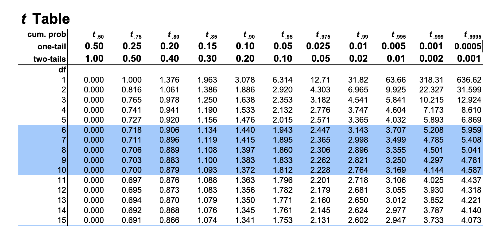
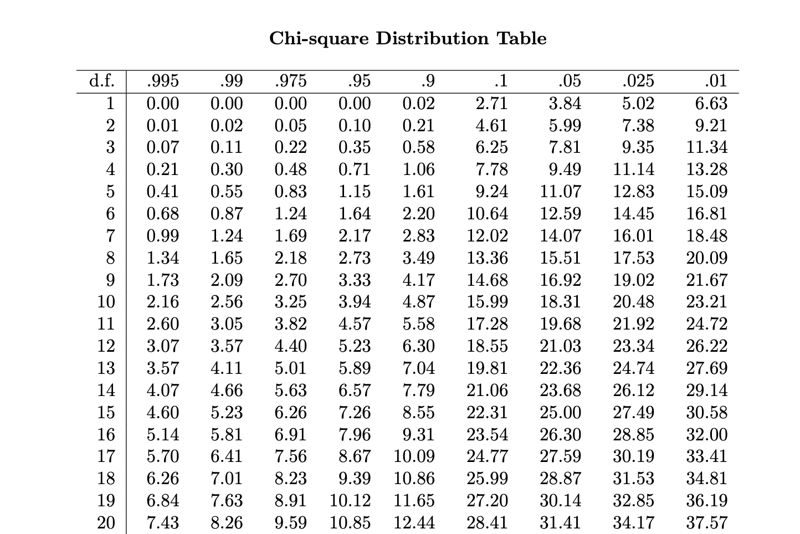

The \(100(1-a)\) percent two-sided confidence interval for \(\mu\) is \[\left( \overline{X} - z_{a/2} \dfrac{\sigma}{\sqrt{n}}, \overline{X} + z_{a/2} \dfrac{\sigma}{\sqrt{n}} \right)\]
Also works when $X is not a Gaussian random variable (if sample size \(n\) is large enough)!
\[P \left( -t_{a/2,n-1} < \dfrac{\overline{X}-\mu}{s / \sqrt{n}} < t_{a/2,n-1} \right) = 1 - a\]
\[P \left( \overline{X} - t_{a/2,n-1} \dfrac{S}{\sqrt{n}} < \mu < \overline{X} + t_{a/2,n-1} \dfrac{S}{\sqrt{n}} \right) = 1 - a\]
The \(100(1-a)\) confidence interval for the mean of a random variable that has unknown mean and variance is \[\left( \overline{X} - t_{a/2,n-1} \dfrac{s}{\sqrt{n}}, \overline{X} + t_{a/2,n-1} \dfrac{s}{\sqrt{n}} \right)\]
 [[https://www.sjsu.edu/faculty/gerstman/StatPrimer/t-table.pdf]]
A sample of 25 rebars tested for yield strengths yielded \(\overline{x}=37.5\) psi and \(s=3.5\) psi. What is the 95% confidence interval for the mean yield strength?
If \(\overline{X}\) and \(S\) are the mean and standard deviation of a random sample from a normal distribution with unknown variance, then the upper and lower confidence intervals are respectively \[\left( \overline{X} - \dfrac{S}{\sqrt{n}} t_{a,n-1}, \infty \right)\] \[\left(-\infty, \overline{X} + \dfrac{S}{\sqrt{n}} t_{a,n-1}\right)\]
Also works for an unknown distribution (Thanks CTL!)
\[P \left[ \chi^2_{1-a/2,n-1} \leq (n-1)\dfrac{S^2}{\sigma^2} \leq \chi^2_{a/2,n-1} \right] = 1-a\]
\[P \left[ \dfrac{(n-1)S^2}{\chi^2_{1-a/2,n-1}} \leq \sigma^2 \leq \dfrac{(n-1)S^2}{\chi^2_{a/2,n-1}} \right] = 1-a\]
If \(S^2\) is the sample variance from a random sample of \(n\) observations from a normal distribution, then a \(100(1-a)\%\) confidence interval on \(\sigma^2\) is \[\left[ \dfrac{(n-1)S^2}{\chi^2_{a/2,n-1}}, \dfrac{(n-1)S^2}{\chi^2_{1-a/2,n-1}} \right]\]
 [[https://people.richland.edu/james/lecture/m170/tbl-chi.html]]
The sample variance of runoff in a river from 25 storms is 0.36 in2. What is the upper 95% confidence bound for the standard deviation of runoff?
If \(n\) is large, the distribution of
\[Z=\dfrac{X-np}{\sqrt{np(1-p)}}=\dfrac{\hat{p}-p}{\sqrt{\dfrac{p(1-p)}{n}}}\] is approximately standard normal.
\[P(-z_{a/2} \leq Z \leq z_{a/2}) = 1-a\] After rearranging terms \[P\left( \hat{p} - z_{a/2} \sqrt{\dfrac{p(1-p)}{n}} \leq p \leq \hat{p} + z_{a/2} \sqrt{\dfrac{p(1-p)}{n}} \right) = 1 - a\]
If \(\hat{p}\) is the proportion of observations in a random sample of size \(n\) that belongs to a class of interest, an approximate \(100(1-a)\%\) confidence interval on the proportion \(p\) of the population that belongs to that class is \[\hat{p} - z_{a/2} \sqrt{\dfrac{\hat{p}(1-\hat{p})}{n}} \leq p \leq \hat{p} + z_{a/2} \sqrt{\dfrac{\hat{p}(1-\hat{p})}{n}}\]
Sample size for a specified error on a binomial proportion \[n=\left( \dfrac{z_{a/2}}{E} \right)^2 p (1-p)\]
If information about \(p\) is unavailable, we can obtain an upper bound of \(n\) \[n=\left( \dfrac{z_{a/2}}{E} \right)^2 (0.25)\]
The approximate \(100(1-a)\%\) lower and upper confidence bounds are \[\hat{p} - z_a \sqrt{\dfrac{\hat{p}(1-\hat{p})}{n}} \leq p\] \[p \leq \hat{p} + z_a \sqrt{\dfrac{\hat{p} (1-\hat{p})}{n}}\]
At a weight station, the weights of trucks were observed before crossing a bridge. Suppose observations of 30 trucks yielded a mean of 12.5 tons. Assume that the standard deviation of truck weights is known to be 3 tons. What is the two-sided 99% confidence interval for the mean weight of trucks?
How many additional trucks should be observed such that the mean truck weight can be estimated to within \(\pm1.0\) ton with 99% confidence?